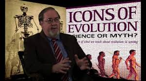

Fear Factor: Scientists Rush to Assure Colleagues They’re Not “Darwin-Bashers”
Here’s an article from the journal Trends in Ecology and Evolution with an eye-catching title.
NEWSMEDIA
David Klinghoffer June 17, 2017, 2:00 AM
CNN: National Center for Science Education “Promotes Science Over Ideology”; What!?
A CNN story laments that some teachers and students are skeptical of climate change.
EVOLUTION
David Klinghoffer June 16, 2017, 10:23 AM
Zombie Science: Jonathan Wells on Overselling Darwin’s Tree of Life
With his own sly humor, Dr. Wells points out some scientific problems with regarding Darwin’s Tree as unassailable fact.
EDUCATION
David Klinghoffer June 15, 2017, 1:30 PM
For the Public School Biology Teacher, Zombie Science Makes an Outstanding Resource
Where do you turn for a reliable, responsible resource to help you clarify the issues for your students?
EVOLUTION
David Klinghoffer June 15, 2017, 2:10 AM
Evolutionary Biologist Backs Off from Computer Simulations
PZ Myers is an atheist activist and evolutionary biologist whose blog is more about promoting his left- wing politics than it is about evolution.
LIFE SCIENCES
Paul Nelson June 14, 2017, 12:17 PM
Butterfly Mystery Solved
The dill and parsley plants in our box garden are loaded with black swallowtail caterpillars.
LIFE SCIENCES
David Klinghoffer June 14, 2017, 11:12 AM
Discovery Institute’s Günter Bechly Presents New Dragonfly Finds from Eocene Baltic Amber
Certainly, the photos are gorgeous, and with Dr. Bechly’s permission I’m delighted to share a few here.
PHYSICS, EARTH & SPACE
Denyse O'Leary June 14, 2017, 2:26 AM
What Becomes of Science When the Evidence Does Not Matter?
Fine-tuning of the universe is so unpleasant a subject for materialists that it cannot really become a controversy.
Here’s an article from the journal Trends in Ecology and Evolution with an eye-catching title, “Reshaping Darwin’s Tree: Impact of the Symbiome.” They want to take greater notice of the way microbes interact with the rest of life, so that
species aren’t to be understood as isolated from each but, instead, joined in a biological symphony, a “symbiome.”
Much of the undescribed biodiversity on Earth is microbial, often in mutualistic or pathogenic associations. Physically associated and coevolving life forms comprise a symbiome. We propose that systematics research can accelerate progress
in science by introducing a new framework for phylogenetic analysis of symbiomes, here termed SYMPHY (symbiome phylogenetics).
Which is not all that provocative, actually, when you consider the way Darwin’s tree of life itself is in danger of toppling, looked at objectively, never mind deckchairs-on-the-Titanic manipulations like this. See our post yesterday with
Jonathan Wells’s comments on overselling Darwin’s tree. What is interesting is the comment of one of the researchers, conveyed by Science Daily.
Imagine you’re a scientist who just published an article that might be taken, at first glance anyway, as critical of Darwin’s fabled tree. The “creationists” will surely leap on that one. If you’re the last-named author credited on the paper,
in this case Debashish Bhattacharya of Rutgers University, you might want to make it very clear that you’re no “Darwin-basher.” A misunderstanding on that point could be very damaging.
And sure enough we find this:
The scientists are calling for the U.S. National Science Foundation, National Natural Science Foundation of China and other funding agencies to support a working group of diverse researchers who would propose plans to create the new SYMPHY
system.
“What we wish to clearly stress is that we are not engaged in Darwin-bashing. We consider Darwin a hero of science,” Bhattacharya said. “New technologies have brought radical new insights into the complex world of microbial interactions
that require a fresh look at how we classify life forms, beyond classical two-dimensional trees.” [Emphasis added.]
They “wish to clearly stress” that they’re not “Darwin-bashers.” Merely stressing this point is not enough. It needs to be clearly stressed. And not only that, but Darwin must be properly hailed as their “hero.”
To the reader with any sensitivity, the anxiety reflected in those few words is evident, and telling. Really, I feel bad for a scientist like Dr. Bhattacharya. You can almost hear the tremble in his voice as he reassures colleagues it is
not his team’s intention to give ammo to those deplorable intelligent design people.
It’s a reminder of something we know well. In academia, conformity on evolution is maintained not by the power of the evidence for the theory, but, much more, by sociological factors. Group think is one. Money is another. And fear may be
the chief of the three.
A CNN story laments that some teachers and students are skeptical of climate change (“Climate change in schools where it’s ‘fake news’”).
Eric Madrid teaches advanced sciences, including topics on climate change and evolution, to high school students in the deep-red Texas Hill Country. As one might expect in this conservative bastion of the nation, some of the students say
it’s all lies or fake news.
Leave the climate question aside — this statement blew me away. They cite our friends at the Darwin- lobbying National Center for Science Education:
This disconnect between scientists and educators was captured in a recent survey (PDF) by the National Center for Science Education, a nonprofit that works to promote science over ideology. “Our survey found that relatively few teachers
had even a college course that devoted as much as a single class to climate change,” said Glenn Branch, the center’s deputy director, who notes that many teachers present misinformation about climate change or avoid teaching it entirely.
[Emphasis added.]
They promote what!? “Science over ideology”?? Every time I see some reporter extensively quoting Glenn Branch on evolution and academic freedom legislation, I know that what I’m going to find is, precisely, misinformation about science and
education.
Go take a look through our archives for mentions of Mr. Branch’s name or his organization. Science over ideology? The Oakland, CA, group is, as we’ve observed countless times, an impressive dispenser of ideologically driven baloney.
That CNN falls for it, like many others in journalism unfortunately, tells you more about CNN than it does about climate change or anything else.

There’s no denying the sly brilliance of the evolutionary Tree of Life, memorialized in Darwin’s Origin by the only illustration in that famous book. In its own origin, of course, the Tree of Life is a sacred and mysterious image from the
Book of Genesis. Evolutionary theory takes it and twists into the symbol of an idea, universal common ancestry, that collides heads on with the simplest reading of the Genesis creation account. Take that, creationists!
All of life may be related as Darwin hypothesized, or it may not. Certainly, though, the science behind the evolutionary tree of life has been vastly oversold. Author of Zombie Science: More Icons of Evolution, biologist Jonathan Wells explains
in a new video conversation why that is so.
With his own sly humor, Dr. Wells points out some scientific problems with regarding Darwin’s Tree as unassailable fact. There can be only one “true tree,” yet fossil, molecular, and other data fail to resolve into any such thing. At the
time of the publication of Dr. Wells’s 2000 book, Icons of Evolution, many scientists still hoped that this situation would resolve itself. It hasn’t. Seventeen years later, inferences from available data are even more confusing. There
is still no realistic prospect of a “true tree” emerging.
Meanwhile, increasing awareness of orphan genes, genes without parallels from one taxon to another, collide head on with evolutionary expectations. Researchers proposing their own “trees” are compelled to cherry-pick, simply ignoring the
inconvenient yet widespread orphans.
It looks more and more like the true tree is an illusion. “The reason we get a tree,” in the first place, says Dr. Wells, “is only because we assume at the outset that it’s there.” Meanwhile, year after year, Darwin’s apologists persuade
the public, including school kids, that all is well and scientists are homing in on the one and only tree. This is zombie science in its purest, most staggering, shuffling form.
Imagine you’re a public high school biology teacher in a state where you are permitted to share objective scientific critiques of evolutionary theory in the classroom – the strengths and weaknesses of Darwinism. Where do you turn for a
reliable, responsible resource to help you clarify the issues for your students?
Here’s a great idea: check out biologist Jonathan Wells’s new book, Zombie Science: More Icons of Evolution. Dr. Wells and fellow biologist Ray Bohlin talk about that in a new ID the Future podcast.
Dr. Bohlin was closely involved with recent revisions to science standards in Texas, and he describes what happened in his state. So let’s say you’re a 9th grade biology teacher there. You want to talk with students about the consistent
pattern of abrupt appearance of species in the fossil record – an observation inconsistent with
< Darwinian predictions; about the mystery of where biological information in DNA comes from, or the puzzle of whale evolution.
Zombie Science covers all of these subjects. The idea, obviously, isn’t to use it as a textbook. It’s written (very accessibly) with the thoughtful adult in mind, not for a 9th grader. But teachers will find the book very useful for the
background it provides.
Wells and Bohlin do note that in a public high school setting, it would be very ill advised to take the discussion some steps further to the question of design in life’s origins. If Darwinism is hobbled as an explanation for biology’s grandeur,
however, what then? Dr. Bohlin admits that as a teacher, he’s uncomfortable saying “I don’t know.” But this is the wisest response.
PZ Myers is an atheist activist and evolutionary biologist whose blog is more about promoting his left -wing politics than it is about evolution. But this caught my eye. In denouncing me for a brief post here recommending a podcast interview
with Introduction to Evolutionary Informatics co-author Winston Ewert, Professor Myers tellingly backs off from the idea of computer simulations of evolution, at least where the Cambrian explosion is concerned.
He doesn’t like our use of the term “falsify,” or that I call the geologically sudden Cambrian event an “event.” But these are minor points. This I find very interesting. Dr. Myers writes:
I also take exception to creationist’s [sic] constant focus on “computer models”. Computer models are useful tools for assessing some ideas, but they’re no substitute for real data…especially when the events you’re pursuing are not simple, and
have a million different equally valid ways of producing a result. Again with the binary thinking: Cambrian evolution will not be described with a “yes” or a “no”.
I’m also going to call shenanigans on his assumptions. The Cambrian was
not an “event”. It was a long, multi-million year series of events, and it was driven by multiple phenomena. There was the pre-Cambrian bioturbation revolution, in which the evolution of worms with hydraulic skeletons drove massive turnover
of nutrients in sediments; there was the gradual increase in atmospheric oxygen, which made more energetic organisms possible; there was a long history of evolution of animal lineages before the Cambrian that set the stage with breadth and depth
of diversity. How do you “simulate” all that on a computer? And why bother, because you know creationists like Klinghoffer will simply reject any result that shows an increase in complexity without an infusion of biological
information
(whatever that means) as cheating? Most importantly, no one with any sense or competence would carry out such a simulation to falsify creationism, an endeavor with no reward, since they’ll just move the goalposts as they always have. [Emphasis
added.]
Now, Dr. Ewert’s point was that computer evolution simulations, as a rule, fail. I would expect this. If they succeeded, that would be a problem for alternatives to unguided evolution.
Ewert was simply reiterating the conclusion that he and co-authors Robert Marks and William Dembski reach, after meticulous investigation, in their book. As Marks puts it, “There exists no model successfully describing undirected Darwinian
evolution. Period. By ‘model,’ we mean definitive simulations or foundational mathematics required of a hard science.” In turn, Marks, Dembski, and Ewert were responding to the challenge of a distinguished mathematician, Gregory Chaitin,
in his book, Proving Darwin: Making Biology Mathematical.
Dr. Chaitin wrote:
The honor of mathematics requires us to come up with a mathematical theory of evolution and either prove that Darwin was wrong or right!
Giving some mathematical rigor to evolutionary theory is not the “focus” of “creationists,” as Myers thinks. Gregory Chaitin is not a “creationist,” or a proponent of the theory of intelligent design. But he is a candid and gracious interlocutor.
In a comment about the Marks-Dembski-Ewert book, he said that it was “An honest attempt to discuss what few people seem to realize is an important problem.” Well, well.
Others feel similarly. Here are a couple of further comments gathered by the publisher. Bijan Nemati of the Jet Propulsion Laboratory:
With penetrating brilliance, and with a masterful exercise of pedagogy and wit, the authors take on Chaitin’s challenge, that Darwin’s theory should be subjectable to a mathematical assessment and either pass or fail. Surveying over seven decades
of development in algorithmics and information theory, they make a compelling case that it fails.
Professor Donald Wunsch, who directs the Applied Computational Intelligence Lab at Missouri University of Science & Technology:
Introduction to Evolutionary Informatics is a lucid, entertaining, even witty discussion of important themes in evolutionary computation, relating them to information theory. It’s far more than that, however. It is an assessment of how things
might have come to be the way they are, applying an appropriate scientific skepticism to the hypothesis that random processes can explain many observed phenomena.
That – whether “random processes can explain many observed phenomena” in life – is exactly the question to consider. Another atheist evolutionary biologist, Richard Dawkins, used to think that simulations held out great promise for settling
the issue. (See, for example, Jonathan Witt’s post, “Richard Dawkins’s Weasel Program Is Bad in Ways You Never Dreamed.”) This is not an issue that “creationists” invented.
And now, just as a major work of ID research arrives, at the cutting edge of thinking on the subject, PZ Myers whines about how simulations are hopeless anyway: “How do you ‘simulate’ all that on a computer? And why bother, because you know
creationists like Klinghoffer will simply reject any result that shows an increase in complexity…”
It’s just what Robert Marks wrote here the other day. He responded to ten common objections to the evidence in Introduction to Evolutionary Informatics. This one is Myers in a nutshell:
2. But Darwinian evolution is so complicated, it can’t be modeled!
If this objection is true, we have reached the same conclusion by different paths: There exists no model successfully describing undirected Darwinian evolution.
Which means that on anyone’s honest analysis, Darwinism fails to deliver on an expectation of what Marks calls “hard science.”
Myers is saying that simulations can’t work, and even if they could, “no one with any sense or competence” would “bother” going through with the exercise for fear of being shown the door by…who? Me? What?? Sorry, that is just a pathetic
excuse, among the lamest from evolutionary advocates that I’ve heard in a while, which is saying something.
Incidentally, for more on the Cambrian explosion from the perspective of biological information and the challenge of making evolution mathematically rigorous, see our brief video, The Information Enigma, highlighting the work of Doug Axe
and Stephen Meyer. Click on the image – a scene from the video – at the top of this post.
Mystery solved: the dill and parsley plants in our box garden are loaded with black swallowtail caterpillars. I guess I’m more of a biologist than I am a gardener, because I’m letting these guys have a chance to form their chrysalises and
turn into gorgeous butterflies (like the one I posted yesterday). Dill and parsley are among the host plants of this species. Biology ROCKS.
Our paleontologist colleague Günter Bechly is a delightful person and a fearless pursuer of truth. He’s also a superb scientist, and it’s a pleasure to follow his publications.
In a brief video excerpt from the documentary Revolutionary, he describes his background prior to his own personal and perilous discovery of the evidence for design in nature. As Dr. Bechly explains, his approach to the subject proceeded
from a fascination with “nature, animals, and natural science.” In the field of paleo-entomology, his special fascination is with dragonflies. His latest work, “First record of hawker dragonflies from Eocene Baltic amber,” co-authored
with Stefan Pinkert and André Nel, is out now in the journal Zootaxa.
They describe, “based on three specimens, …a new genus with two new species.” They place the specimens in the Middle-Upper Eocene, somewhere in the neighborhood of 37 million years old. Amazing. From the paper:
Introduction Baltic amber is a fossil resin from a conifer tree species (most probably Sciadopithys or Pseudolarix, Wolfe et al. 2009) that formed widespread tropical/subtropical forests from Scandinavia to Eastern Europe during the
Middle and Upper Eocene. Most amber pieces originate from secondary deposits along the coast of the Baltic Sea. While small insects (predominantly Diptera and Hymenoptera) are abundant and completely preserved as inclusions in Baltic amber,
large insects are much rarer and usually fragmentary, because they could either escape the sticky resin or were eaten by scavenging insects before completely embedded. Odonata are especially rare in Baltic amber (Bechly 1996a, 1998),
while they are very diverse and surprisingly frequent in Mid-Cretaceous Burmese amber (Zheng et al. 2016a,b, 2017). Anisoptera are even more elusive, with only four specimens yet reported from Baltic amber (Bechly 1998; Bechly
& Wichard 2008), one more from Paris Basin amber (Fleck et al. 2000), and three more from Burmese amber (Schädel & Bechly 2016; Zheng et al. 2016a,b, 2017). Schädel & Bechly (2016) already briefly mentioned one undescribed Macromiidae
and two undescribed specimens (described herein) of Gomphaeschninae in the Baltic amber collection of SMNS. Based on three specimens of two new species of the same new genus we here describe the first record of hawker dragonflies
in Baltic amber and only the third record of this Anisopteran group in amber at all (Zheng et al. 2016b, 2017).
Congratulations! Certainly, the photos are gorgeous, and with Dr. Bechly’s permission I’m delighted to share a few here.
Popular articles on origin-of-life research have often portrayed the field as constantly advancing and quickly converging on a purely materialistic explanation for the first autonomous cell. However, the true state of affairs is far grimmer. The
highpoint of optimism was actually in the 1950s when Stanley Miller’s experiment produced several of the building blocks of life. Unfortunately, geologists later recognized that the gases used in that experiment did not match the chemistry of
the early Earth. When redone with those actually present, the experiments produced few building blocks in sufficient quantities to contribute to origin-of-life scenarios. Moreover, close examination of modern attempts to synthesize life’s precursors
reveals that the formation of many of them on the early Earth in significant quantities is virtually impossible. However, the more fundamental challenge of thermodynamics dwarfs even these hurdles.
Common arguments about the origin of life
have traditionally focused on the unlikelihood of life forming by chance. Perhaps most famously, physicist Fred Hoyle calculated the probability of a cell coalescing to be roughly 1 part in 10 to the power of 40,000. He compared this probability
to the chances of a tornado plowing through a junkyard and assembling a jet airplane. The concept of probability is closely linked to that of entropy, since probability is proportional to the number of configurations (N) in which some state could
occur, and entropy is proportional to the log of N. As an example, the number of ways water molecules can arrange themselves in the solid state is much smaller than the number ways in the liquid or gas states, so ice is the state with the lowest
entropy. Due to this connection, the probability argument is often restated that nature tends to move from states of lower entropy to higher entropy, which simply means that nature moves towards states which are highly probable. This tendency
is known as the second law of thermodynamics.
Such arguments sound impressive at first, but they are actually incomplete. Nearly all researchers recognize that the first cell could not have come about by chance. They instead believe that some physical processes helped to beat the
odds. As an analogy, one could never role one thousand sixes in a row with fair dice. However, if the dice were loaded, that outcome could be quite likely or even close to guaranteed. Analogously, some systems do, in fact, naturally move from
states of higher entropy to those of lower entropy (i.e., seemingly low probability) if the lower-entropy states are highly biased to occur. Such a bias is created by a second driving tendency. Namely, nature tends to move from states of higher
energy to those of lower energy. For instance, rocks roll downhill, since lower altitude corresponds to lower gravitational energy. Likewise, molecules of water attract each other, so ice is a lower energy state since the water molecules are on
average closer to each other than in the liquid or gas states. At low enough temperatures, this attraction overcomes the tendency to move toward higher entropy resulting in water freezing.
However, even in these cases of locally decreasing entropy, the second law of thermodynamics is not violated, for the changes are always exothermic — heat is released. The heat leaving the local system (e.g., a cup of freezing water)
and entering the surrounding environment increases the latter’s entropy by an amount greater than the entropy decrease of the local system. Therefore, the total entropy of the universe increases. The problem for all theories of origin of life
now becomes quite evident. The simplest functional cell compared to its most basic building blocks has both lower entropy and higher energy. And, natural systems never both decrease in entropy and increase in energy at the same time. Such an event
would be like rolling countless sixes in a row when the dice are strongly loaded against rolling even one. Therefore, the origin of life through purely natural processes would seem as implausible as water on a hot summer day spontaneously freezing
or a river flowing unaided uphill for thousands of miles.
Physicists and chemists often combine entropy and energy (or enthalpy) together into what is called the free energy of a system. The change of free energy is always negative for spontaneous changes (e.g., wood burning or ice melting in
summer), and it directly relates to the total increase in entropy of the universe. The challenge for the origin of life is then explaining how billions of atoms could spontaneously come together into a state of significantly higher free energy.
The chance of such an event happening through thermal fluctuations was calculated by biophysicist Harold Morowitz to be less than 1 part in 10 to the power of a hundred million. This number comes directly from an estimation of the free energy
of life, and the free energy is a path-independent function. Therefore, this maximum probability estimate is not meaningfully dependent on the theoretical route that led to life (e.g., protein-first versus RNA world) or on the number of steps
involved. The probability is always essentially zero.
At face value this thermodynamic analysis for the origin of life would seem to negate any possible materialistic solution to the problem. However, theorists have long recognized one remaining loophole. Morowitz’s calculations assumed
that the system was in a state near equilibrium. For instance, some lightning bolt could have struck a pond of prebiotic chemicals at night causing atoms to come together into different configurations. The pond would then quickly settle back into
a calm state where the temperature, concentrations, and other variables would remain fairly uniform. However, many argue that the origin of life took place in a system strongly driven away from equilibrium, such as a pond subjected to intense
sunlight or the bottom of the ocean near a hydrothermal vent flooding its surroundings with superheated water and high-energy chemicals. Such settings are commonly referred to as non-equilibrium dissipative systems. Their common characteristic
is that classical thermodynamics breaks down, so the previous analyses do not completely hold. Instead, principles of non-equilibrium thermodynamics must be applied, which are far more complex and less well understood. Moreover, the energy from
these outside sources is hoped to enable the free-energy barrier to be overcome.
However, such appeals to non-equilibrium systems do little to solve the basic thermodynamic problems. First, no system could be maintained far from equilibrium for more than a limited amount of time. The sun is only out during the day,
and superheated water at the bottom of the ocean would eventually migrate away from any hydrothermal vents. Any progress made toward forming a cell would be lost as the system reverted toward equilibrium (lower free energy) and thus away from
any state approaching life. Second, the input of raw solar, thermal, or other forms of energy actually increase the entropy of the system, thus moving it in the wrong direction. For instance, the ultraviolet light from the sun or heat from hydrothermal
vents would less easily form the complex chemical structures needed for life than break them apart. Finally, in non-equilibrium systems the differences in temperature, concentrations, and other variables act as thermodynamic forces which drive
heat transfer, diffusion, and other thermodynamic flows. These flows create microscopic sources of entropy production, again moving the system away from any reduced-entropy state associated with life. In short, the processes occurring in non-equilibrium
systems, as in their near-equilibrium counterparts, generally do the opposite of what is actually needed.